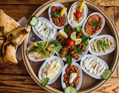
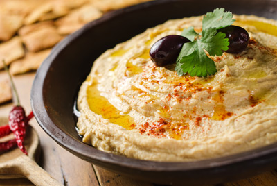
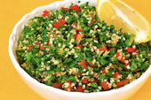
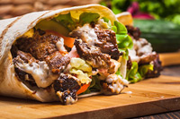
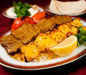
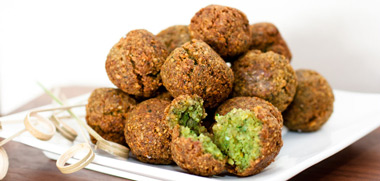
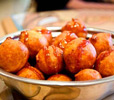
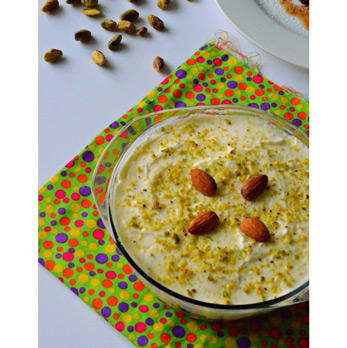
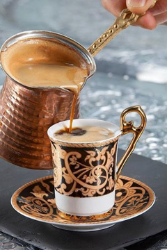

Tot i que la gastronomia de Dubai és bastant internacional, també és cert que gran part dels restaurants serveixen diversos plats àrabs originaris de l’Orient Mitjà. Les cuines libanesa, iraniana i siriana són presents a la ciutat. Entre els plats típics destaquen les receptes a la graella, diversos peixos i carns (no de porc) són cuinats en aquesta modalitat. Aquests són alguns dels plats típics que es poden trobar a Dubai:
Assortiment de petits plats que se serveixen com a entrants.
Es tracta d’una crema de cigrons a la qual se li afegeix oli d’oliva, sal i sèsam i que es pren freda.
Plat fred compost per julivert, tomàquet, enciam, oli d’oliva i herbes aromàtiques.
Pa de pita amb fines làmines de carn de xai, pollastre o vedella amb vegetals i salsa.
Amb carn de moltó i arròs combinat amb diversos tipus d’espècies.
Croqueta de cigrons o faves.
Bola de llet, sal i iogurt fregida i coberta de mel.
 Pastís de pasta de full i ametlles que se sol servir calent.
Pastís de pasta de full i ametlles que se sol servir calent.
Pastís de formatge amb crema.
La seva preparació consisteix en un ritual diari summament atractiu a la vista: en molts restaurants podràs observar com es fa.